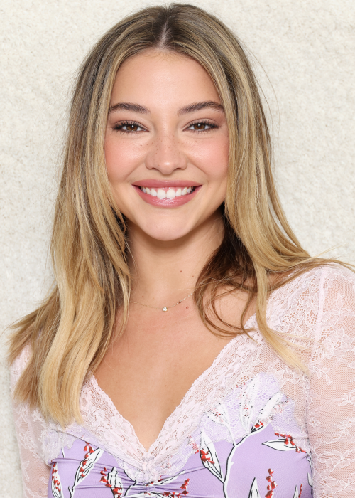

class="lead" Eu sou Madelyn Cline_
Meu nome é Madelyn Renee Cline, eu nasci dia 21 de Dezembro de 1997, tenho 27 anos e eu sou uma atriz e modelo norte-americana, fiquei conhecida por interpretar a personagem Sarah Cameron na serie de drama da Netflix, Outer Banks, mas já atuei em outros trabalhos como Stranger Things, Os Originais, EuSei O Que Vocês Fizeram No Verão Passado,Vice Principals e muito mais. Também já trabalhalhei para algumas marcas como: American Girl, Toys "R" Us, American Eagle, Stella McCartney, Versace, Elle e Cosmo.
Alguns Dos Meus Trabalhos
Outer Banks
Stranger Things
Os Originais
O Mapa Que Leva A Você